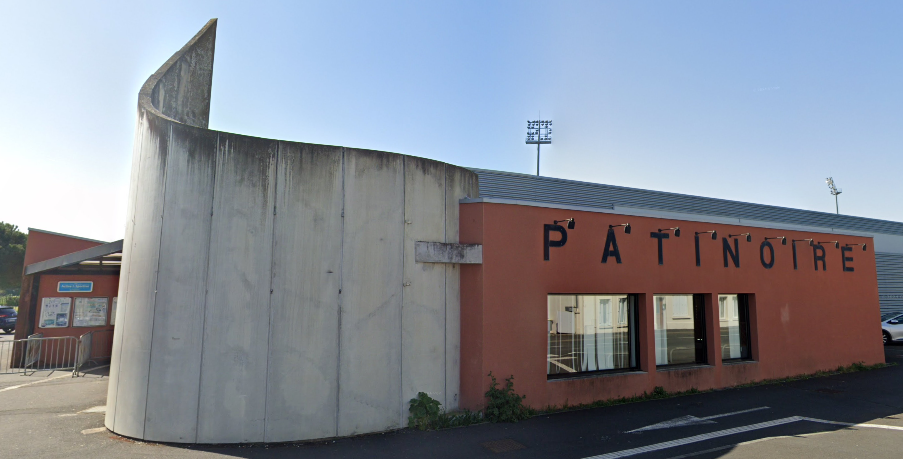

Population et société
Démographie
Niort a fusionné avec plusieurs communes environnantes : Souché en 1964, Sainte-Pezenne en 1965, Saint-Florent en 1969 et Saint-Liguaire en 1972.
Les évolutions démographiques des trois communes citées en premier figurent sur leurs articles respectifs.
Celle de Saint-Liguaire est indiquée ci-dessous.
Évolution démographique
À partir de 1968, le recensement de Niort enregistre les nouvelles communes intégrées, Souché et Sainte-Pezenne. À compter de 1975,
il tient compte également de l'intégration de Saint-Florent et Saint-Liguaire. Au XXIe siècle, les recensements des communes de
plus de 10 000 habitants s'effectuent par quartier sur une période de cinq ans. Pour Niort, les dates de recensements ci-dessous
(2006, 2009, etc.) sont des estimations légales. L'évolution du nombre d'habitants est connue à travers les recensements de la
population effectués dans la commune depuis 1793. Pour les communes de plus de 10 000 habitants les recensements ont lieu chaque
année à la suite d'une enquête par sondage auprès d'un échantillon d'adresses représentant 8 % de leurs logements, contrairement
aux autres communes qui ont un recensement réel tous les cinq ans.
Le recensement Niortais au cours de l'histoire
| Évolution de la population |
| Année |
1793 |
1800 |
1806 |
1821 |
1831 |
1836 |
1841 |
1846 |
1851 |
1856 |
1861 |
1866 |
1872 |
| Nombre d'habitants |
11 515 |
15 028 |
15 066 |
15 499 |
17 000 |
18 197 |
18 739 |
18 604 |
18 727 |
20 037 |
20 831 |
20 775 |
21 344 |
| Année |
1876 |
1881 |
1886 |
1891 |
1896 |
1901 |
1906 |
1911 |
1921 |
1926 |
1931 |
1936 |
1946 |
| Nombre d'habitants |
20 923 |
22 254 |
23 015 |
23 225 |
23 674 |
23 897 |
23 775 |
23 775 |
23 559 |
25 721 |
25 935 |
27 830 |
32 752 |
| Année |
1954 |
1962 |
1968 |
1975 |
1982 |
1990 |
1999 |
2006 |
2011 |
2016 |
2021 |
2022 |
| Nombre d'habitants |
33 167 |
37 512 |
48 469 |
62 267 |
58 203 |
57 012 |
56 663 |
58 066 |
57 813 |
59 005 |
59 309 |
60 074 |
Enseignement
La ville compte dix-neuf groupes scolaires publics et six établissements privés d'enseignement primaire, ainsi que neuf collèges et sept lycées dont un consacré à l'horticulture, le lycée Gaston-Chaissac.
Si le Pôle universitaire niortais (PUN), antenne locale de l’Université de Poitiers, est le site le plus important en nombre d’étudiants accueillis, on compte aussi une trentaine de BTS préparés dans des lycées ou les chambres consulaires et plusieurs formations, fruits de partenariats avec différentes structures délocalisées comme le CNAM, Excelia Group Sup de Co, l’UIMM (Union de l’industrie et des métiers de la métallurgie) ou l’université de La Rochelle.
Autres
Équipements sportifs de la ville
- Patinoire
- Stade René-Gaillard à l'ouest ; stade d'entraînement de football pour les Chamois niortais
- Stade Espinassou (stade de rugby) stade d'entrainement de rugby pour le stade niortais ;
- Terrain de bicross
Patinoire de Niort

La patinoire de Niort est une patinoire de hockey sur glace et de patinage artistique, située à Niort, dans le département des Deux-Sèvres. Elle est ouverte au public depuis 1992.